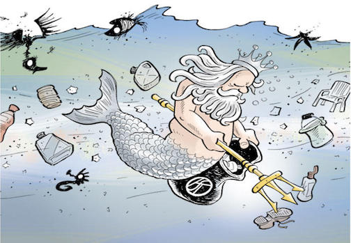

Each Day, Our habitats are destronyed, some species are lost and the climate change because of the pollution cause by human being. "Small step for man, one giant leap for mankind." The first step is bringing the environmental awareness around the global to remind human to protect our Earth.

Marine Ecosystem cover 2/3 of the surface of the Earth, within the oceab havitat live more than one millions marine species.However, people alwasy ignore the marine ecosystem and even having many behaviors that will destory marine life without anwareness.
Underwater Peace is a project that give a peaceful underwater 3D interactive scene for browser to stay away their busy real life , as the same time, I hope it also can remind people to protect our ocean ecosystem.